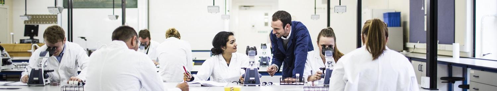
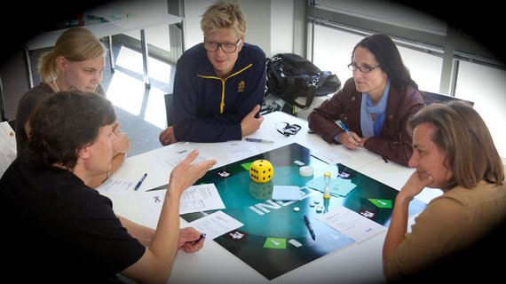
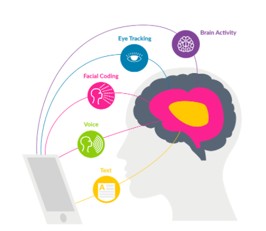
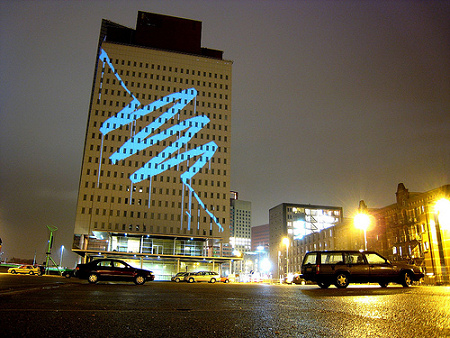

Meet the team!
Political scientists, psychologists, cognitive neuroscientists and computational social scientists, working on the same questions from different directions.
Working with us
Collaborators
Our work is produced in collaboration with colleagues across the University of Edinburgh, with other universities in the UK and abroad, and with partners in industry.

Clinical Research Imaging Centre
Neil Roberts

Brain Research Imaging Centre
Cyril Pernet

Psychology — The University of Edinburgh
Antje Nuthmann / Alexa Morcom

Interacting Minds Centre — University of Aarhus

Crowd Emotion
